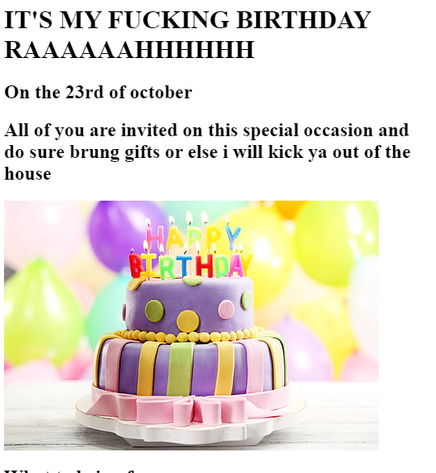

My Portfolio
I am a Web developer
Here are some of the projects that i made
Bithday Invitation Project
This was one of the projects in which i investedmost of my time as i learned a lot of new things and applied it here
In this as u can see i added images and also links too.Here is a preview of it and click on the Birthday Invitation page to watch the whole page

Movie Ranking Project
This was my first project which is basic but as a beginner i am proud of what i did.So here's the preview or click on the link to watch the whole page